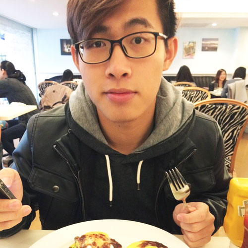
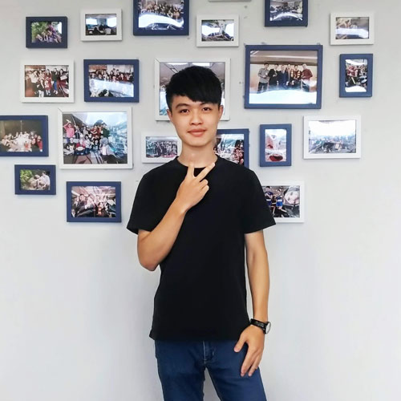
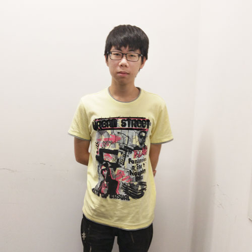
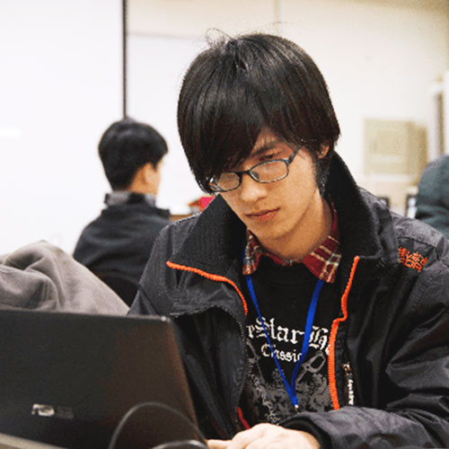

實習生心得分享

Ivan
國立臺灣大學
在天堂實習的這段時間除了發現寫測試的重要性，還接觸到以往獨自開發時沒遇過的技術，包含自動化測試，CI / CD，且對於混帳有更深刻的了解（因為常常用錯... ）。更甚，在這裡工作的過程中也意識到與他人一同工作所需要注意的事情，包含如何精準表達自己的想法，將抽象的程式思維轉換成具體的事物，快速理解他人的思緒，多人協作時如何分配時間與溝通諸如此類，逐漸理解到身為一個軟體工程師除了寫程式之外應該具備的能力，我想這大概是在天堂得到的最大的收穫吧。

Adam
淡江大學
相比去領錢打雜，如果你想真正的學習，這裡絕對適合你，我們做的專案都是會直接面對客戶，在這種有挑戰的環境下，進步是最顯而易見的，當然，事前的教育訓練不會少，不會把什麼都不會的你推到浪頭上，只要你有想學習的態度，能力絕對不是一個問題。
這裡沒有人與人交際的壓力問題，實習生的身分更不會讓你感覺到落人一等，同事間的相處就像朋友，遇到問題時，討論會代替解答，互相學習已經是這裡的一個文化，公司的福利一點都不開玩笑，你只要顧好自己的工作，天堂一定讓你過的舒舒服服、養得白白胖胖。
在這段期間，學到的不只有工程師的技能，和他人的配合與溝通也是平時工作上會訓練到的能力，如果你以為工程師就是與電腦工作，可能會讓你非常不習慣。人生中有很多經歷都是要在事後才能去體會它所帶來的意義，我很慶幸大四上所做的決定，這一年的過程我想會對未來造成很大的影響，對我來說，獲益匪淺，希望對你來說實習也會是一個影響你一生的經驗。

Harry
臺北科技大學
能來到天堂遊戲公司實習說起來也是滿幸運的，當初那梯次四個人一起面試的時候，大家的表現都不是很好，只因為我展現積極努力的一面，而讓無網站後端經驗的我獲得了這次的門票。
實習的過程，這邊的工程師及主管把我當成真正職場上的工程師在訓練，希望我們能在實習中真的獲得些什麼，而不是打打雜就結束。從最初的MVC、RESTful API、爬蟲，除了讓我們先簡單上手Golang這個程式語言之外，也使我們更快速的對於這邊使用的框架，或是一些應用能多一些了解。
我也很慶幸自己遇到的Mentor是願意在我遇到瓶頸時提供我協助的人，提供我部分線索，讓我自己找到答案，也在偶爾的交談過程中，告訴我該以什麼樣的心態在軟體這個行業、以什麼樣的方式面對工作這一件事情。

Hongrui
德明財經科技大學
不知不覺的在天堂遊戲實習也快一年了，這也是我第一次接觸到資訊業這個環境，老實說剛開始跟我想的不太一樣，
例如開發一個小功能就需要跑非常多流程，還要考慮日後是否好維護，或是可能會有那些場景會影響到功能的運作等，而這些都是在學校裡面學不到的，雖然也是有辛苦的地方，但也讓我獲得不少收穫，而且實習期間也讓我過得很充實。
也很感謝主管及各位同事，因為在我剛進去時有很多流程或工作內容都還不太熟，很多地方都搞不太懂，實作上也常常遇到一些問題，常常卡住，但大家都會很熱心地教我，有問題時他們也會分享自己的想法跟意見，往往都能重他們身上學到不少東西，而且我們部門每個禮拜都會有分享會，大家會分享一些技術相關的知識，有聽不懂的地方或問題也會提出來大家互相討論，交換意見，所以我在公司裡面學習到的不只有工作內容，也而外獲取到很多以前沒有的新知識，希望在未來也能活用在這段時間裡學習到的東西。
Irene
聯合大學
在六個月的實習過程中，這樣的工作環境，讓我覺得每天都能學習到新的事物，不斷的讓自己越來越進步。
在Backend Team的六個月中，從一開始接觸到許多不熟悉的技術，到逐漸能嘗試獨立完成需求，這過程中都會接觸到不同的新事物，但越是能有機會去接觸新的嘗試就能驅使自己更加進步。而實習過程中除了技術上的學習，在與人溝通上我也體會到是十分重要的，尤其是如何表達自己的看法讓他人能夠理解。
我認為在這些經歷中每一刻都是很重要的，都藏著許多值得體驗和學習的事物，也因為經歷過才能了解自己是否有所成長。

RenHao
輔仁大學
在天堂實習的這段時間，我學到了很多平時很難有機會接觸的事情。無論是團隊的合作模式，或是在學校裡很難有機會實際執行的開發流程，對我來說都是一份重要的經驗。
在公司實習中，學習技能的確也很重要，但是，我想實習更重要的還是“人”。主管也常常告訴我:來實習最重要的不是技術，而是在學會溝通，表達。這不是件容易的事，是我在實習的過程中不斷訓練的方向，更是我一直以來努力的目標。
確實，一邊上課還要出來實習是很辛苦，在工作時事情來不及完成的焦慮也會讓我備感壓力。不過，也就是因為這份壓力推著我，我才能不斷地前進。